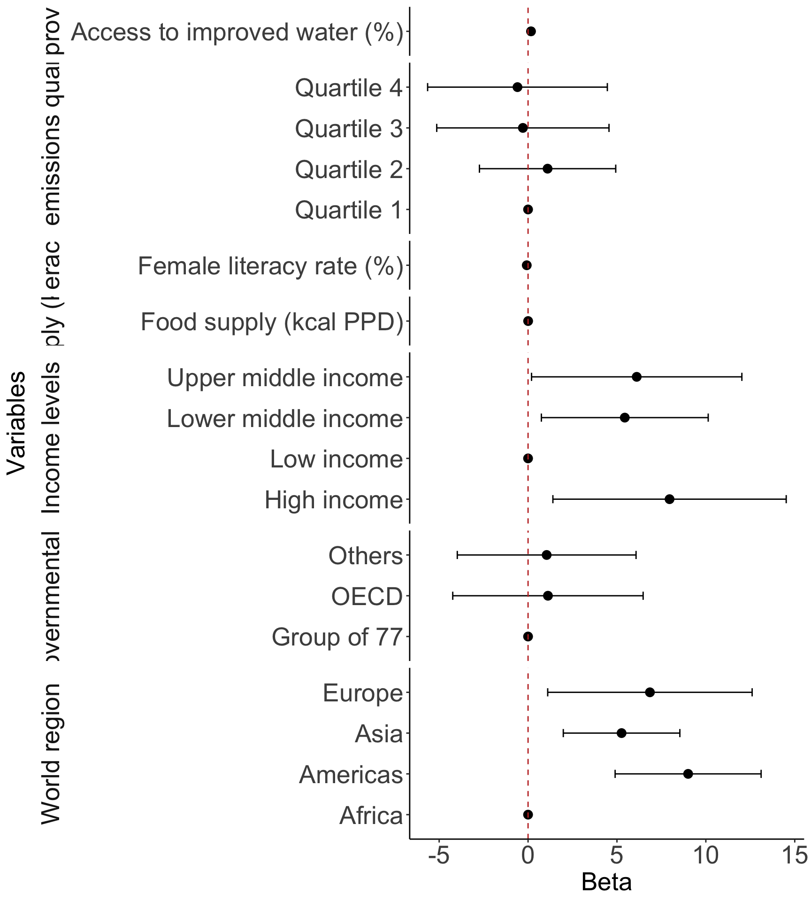

2025-06-04
If you did purposeful model selection:
Table 1
Table showing odds ratios for your main variable + variable from interaction
One additional figure or table to help understand your question
Interpretations of odds ratios from Table in #2
If you did LASSO:
Table 1
Table or plot showing most important variables
One additional figure or table to help understand your question
Interpretations of important variables: identify top 1-3 that predict outcome
library(gtsummary)
gapm2_vars = gapm2 %>%
select(
CO2emissions,
FoodSupplykcPPD,
FemaleLiteracyRate,
WaterSourcePrct,
four_regions,
members_oecd_g77,
income_levels1
)
tbl_summary(
gapm2_vars,
label = list(
FemaleLiteracyRate = "Female literacy rate (%)",
CO2emissions = "CO2 emissions quartiles",
income_levels1 = "Income levels",
four_regions = "World region",
WaterSourcePrct = "Access to improved water (%)",
FoodSupplykcPPD = "Food supply (kcal PPD)",
members_oecd_g77 = "Intergovernmental group"
),
statistic = list(all_continuous() ~ "{mean} ({sd})")
)| Characteristic | N = 721 |
|---|---|
| CO2 emissions quartiles | 4.1 (5.6) |
| Food supply (kcal PPD) | 2,812 (407) |
| Female literacy rate (%) | 82 (23) |
| Access to improved water (%) | 86 (16) |
| World region | |
| Africa | 20 (28%) |
| Americas | 12 (17%) |
| Asia | 17 (24%) |
| Europe | 23 (32%) |
| Intergovernmental group | |
| Group of 77 | 47 (65%) |
| OECD | 7 (9.7%) |
| Others | 18 (25%) |
| Income levels | |
| Low income | 10 (14%) |
| Lower middle income | 24 (33%) |
| Upper middle income | 24 (33%) |
| High income | 14 (19%) |
| 1 Mean (SD); n (%) | |
tbl_regression(
final_model,
label = list(
FemaleLiteracyRate ~ "Female literacy rate (%)",
CO2_q ~ "CO2 emissions quartiles",
income_levels1 ~ "Income levels",
four_regions ~ "World region",
WaterSourcePrct ~ "Access to improved water (%)",
FoodSupplykcPPD ~ "Food supply (kcal PPD)",
members_oecd_g77 ~ "Intergovernmental group"
)) %>%
as_gt() %>%
tab_options(table.font.size = 20) %>%
cols_width(label ~ px(250))| Characteristic | Beta | 95% CI1 | p-value |
|---|---|---|---|
| Female literacy rate (%) | -0.07 | -0.17, 0.02 | 0.13 |
| CO2 emissions quartiles | |||
| Quartile 1 | — | — | |
| Quartile 2 | 1.1 | -2.7, 4.9 | 0.6 |
| Quartile 3 | -0.29 | -5.1, 4.6 | >0.9 |
| Quartile 4 | -0.60 | -5.6, 4.5 | 0.8 |
| Income levels | |||
| Low income | — | — | |
| Lower middle income | 5.4 | 0.75, 10 | 0.024 |
| Upper middle income | 6.1 | 0.20, 12 | 0.043 |
| High income | 8.0 | 1.4, 15 | 0.018 |
| World region | |||
| Africa | — | — | |
| Americas | 9.0 | 4.9, 13 | <0.001 |
| Asia | 5.3 | 2.0, 8.5 | 0.002 |
| Europe | 6.9 | 1.1, 13 | 0.020 |
| Access to improved water (%) | 0.17 | 0.03, 0.30 | 0.015 |
| Food supply (kcal PPD) | 0.00 | 0.00, 0.01 | 0.073 |
| Intergovernmental group | |||
| Group of 77 | — | — | |
| OECD | 1.1 | -4.2, 6.5 | 0.7 |
| Others | 1.0 | -4.0, 6.1 | 0.7 |
| 1 CI = Confidence Interval | |||
library(broom.helpers)
model_tidy = tidy_and_attach(final_model, conf.int=T) %>%
tidy_remove_intercept() %>%
tidy_add_reference_rows() %>% tidy_add_estimate_to_reference_rows() %>%
tidy_add_term_labels()
ggplot(data=model_tidy, aes(y=label, x=estimate, xmin=conf.low, xmax=conf.high)) +
facet_grid(rows = vars(var_label), scales = "free",
space='free_y', switch = "y") +
geom_point(size = 3) + geom_errorbarh(height=.2) +
geom_vline(xintercept=0, color='#C2352F', linetype='dashed', alpha=1) +
theme_classic() +
labs(x = "Beta", y = "Variables") +
theme(axis.title = element_text(size = 20), axis.text = element_text(size = 20),
title = element_text(size = 20), strip.placement = "outside",
strip.text = element_text(size = 20), strip.background = element_blank())
There is extra care to reporting results from interactions
Please make sure you use estimable() to get the correct effects!
Poster info